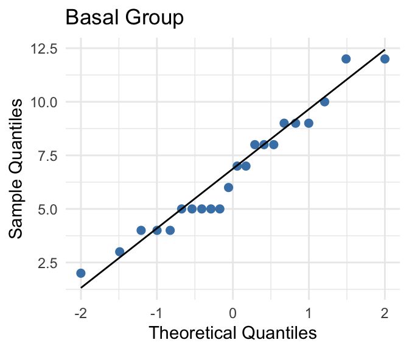
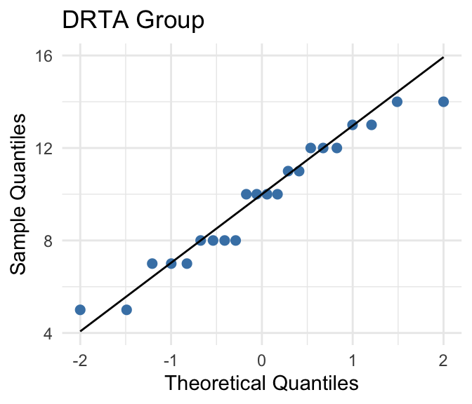
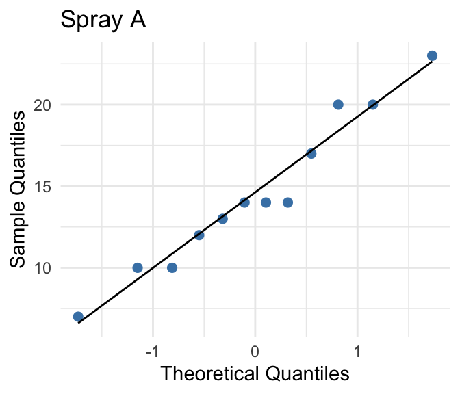
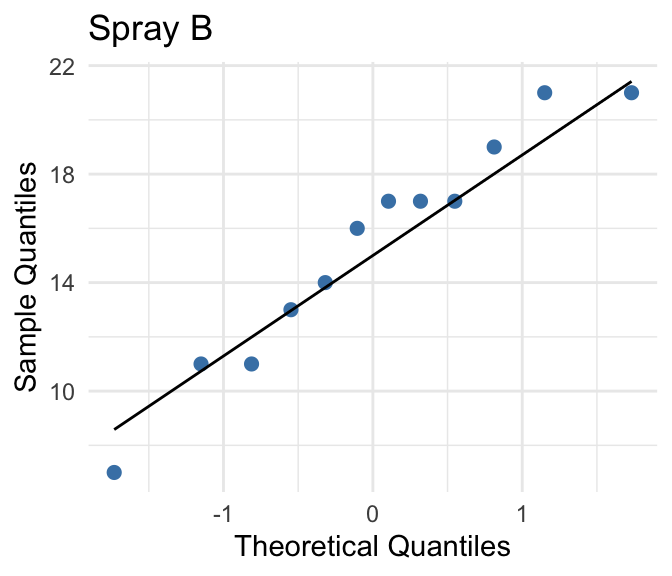

Inference for Difference in Means
Key Concepts
- Find the mean and standard error for a distribution of differences in sample means between two groups
- Recognize when a \(t\)-distribution is an appropriate model for a distribution of the standardized difference in two sample means
- Use a \(t\)-distribution, when appropriate, to compute a confidence interval for the difference in means between two groups
- Use a \(t\)-distribution, when appropriate, to test a hypothesis about a difference in means between two groups
Distribution of a difference in means
For quantitative data, we often want to learn about a difference in averages from two groups. We can use the CLT to conduct inference about differences in averages if we have a large enough sample size. Consider two groups\(n_1\)and\(n_2\)that come from populations with means \(\mu_1\)and \(\mu_2\)and standard deviations \(\sigma_1\)and \(\sigma_2\)respectively. If sample size is large enough, the CLT says that the distribution of all differences in sample averages (\(\overline{x}_1 - \overline{x}_2\)) will follow a normal distribution that is centered at the true population difference in averages (\(\mu_1 - \mu_2\)). When we use the CLT, we can estimate the standard error for a sample average by
\[ SE(\overline{x}_1 - \overline{x}_2) = \sqrt{ \frac{ \sigma_1^2}{n_1} + \frac{ \sigma_2^2}{ n_2}} \]
As with single averages, we almost never know the population standard deviations (\(\sigma_1\)and \(\sigma_2\)), so we estimate them by using the sample standard deviations (\(s_1\)and\(s_2\)).
We estimate the standard error of \(\overline{x}_1 - \overline{x}_2\)with \(\sqrt{\frac{s_1^2}{n_1} + \frac{s_2^2}{n_2}}\)
When we use\(s_1\)and\(s_2\)instead of \(\sigma_1\)and \(\sigma_2\),\(\overline{x}_1 - \overline{x}_2\)no longer follows a normal distribution. The difference follows a \(t\)-distribution and the degrees of freedom are approximately equal to the smaller of\(n_1 - 1\)and\(n_2 - 1\).
Conditions
Each sample must satisfy the necessary conditions for averages.
In order to be able to use this distribution for a difference in averages, you need to make sure that each group satisfies the conditions for an average. Recall from the 6.4 – 6.6 notes:
- For a large enough sample size (\(n_1 \ge 30\)and\(n_2 \ge 30\)), you can use the \(t\)-distribution
- If\(n < 30\), then the \(t\)-distribution is only a good approximation if the population is approximately normal.
Class Example 6.1: Describe the sampling distribution
For each of the following questions, identify whether or not a \(t\)-distribution would be appropriate.
- Comparing averages from two samples of sizes\(n_1 = 10\)and\(n_2 = 15\), from populations that are approximately normal.
- Comparing averages from two samples of sizes\(n_1 = 15\)and\(n_2 = 40\), where population 1 is heavily skewed right, and population 2 is approximately normal.
- Comparing averages from two samples of sizes\(n_1 = 50\)and\(n_2 = 50\), from two populations that are heavily skewed to the left.
CI for a difference in means
Remember, each sample must satisfy the necessary conditions for averages.
Provided that for each group the sample size is large enough (\(n \ge 30\)) or the population is approximately normal, a confidence interval for a difference in population averages \(\mu_1 - \mu_2\)can be constructed using
\[ (\overline{x}_1 - \overline{x}_2) \pm t^* \sqrt{ \frac{ s_1^2 }{ n_1 } + \frac{ s_2^2}{ n_2 }} \]
where \(\overline{x}_1 - \overline{x}_2\)is the difference in sample averages and\(t^*\)is the appropriate confidence multiplier.
Class Example 6.2: Highball vs tumbler
Two common types of glassware at a bar are “highballs” (tall and thin) and “tumblers”(short and wide). Researchers randomly assigned participants either a “highball” glass or a “tumbler,” each of which held 355 ml. Participants were asked to pour a shot (1.5 oz = 44.3 ml) into their glass. The summary statistics are given in the table below.
| \(n\) | \(\overline{x}\) | \(s\) | |
|---|---|---|---|
| Highball | 99 | 42.2 ml | 16.2 ml |
| Tumbler | 99 | 60.9 ml | 17.9 ml |
We want to know about the difference in the average amount of liquid poured into the two types of glasses.
- What are the variables of interest in this study? Are they categorical or quantitative? Which is the explanatory variable and which is the response?
- What is the parameter of interest?
- Find and interpret a 95% confidence interval estimate for the difference in the average amount poured in the two different types of glasses. Use highball for group 1 and tumbler for group 2.
- If you were the owner of a local bar, from a profit perspective, do you think there is any reason to prefer the highball to the tumbler glass?
Class Example 6.3: Swimming heats at the Olympics
The data in the table below are finishing times randomly selected from the preliminary heats for the 100m women’s backstroke in the 2020 Tokyo Olympics for heats 5 and 6.
| Heat 5 | 57.96 | 59.02 | 59.88 | 60.07 |
|---|---|---|---|---|
| Heat 6 | 57.88 | 58.69 | 59.99 | 60.07 |
We want to know about the difference in the average finishing times for the two preliminary heats.
- What are the variables of interest in this study? Are they categorical or quantitative? Which is the explanatory variable and which is the response?
- What is the parameter of interest?
- Find and interpret a 95% confidence interval estimate for the difference in the average time between the two heats. You may assume that the finishing times for all participants in the heats are approximately normally distributed.
- Does your interval in c) suggest that there is a difference in the average finishing time between the heats?
Hypothesis test for a difference in means
Each sample must satisfy the necessary conditions for averages.
Provided that for each group the sample size is large enough (\(n \ge 30\)) or the population is approximately normal, then according to the CLT
\[ t = \frac{ \overline{x}_1 - \overline{x}_2 }{ \sqrt{ \frac{ s_1^2 }{ n_1 } + \frac{ s_2^2 }{ n_2 }}} \]
follows a \(t\)-distribution.
We can use this fact to conduct a hypothesis test. As with the hypothesis test we have discussed thus far, there are a specific set of steps to conduct a hypothesis test using the CLT.
Step 1: Check conditions for the test
Check that for both groups\(n \ge 30\)or the population is approximately normal.
Step 2: State the hypotheses
For a difference in averages, the null hypothesis always has the form
\[ H_0: \mu_1 - \mu_2 = 0 \]
The alternative hypothesis has one of the following three forms:
\[ \begin{aligned} H_a: &\mu_1 - \mu_2 < 0\\ H_a: &\mu_1 - \mu_2 > 0\\ H_a: &\mu_1 - \mu_2 \neq 0 \end{aligned} \]
Step 3: Calculate the test statistic
To conduct the hypothesis test using the CLT, we use a standardized test statistic of
\[ t = \frac{ \overline{x}_1 - \overline{x}_2 }{ \sqrt{ \frac{ s_1^2 }{ n_1 } + \frac{ s_2^2 }{ n_2 }}} \]
which follows a \(t\)-distribution.
Step 4: Find the \(p\)-value and give a sketch to illustrate the \(p\)-value
To find the \(p\)-value, you must use technology to find what proportion of the standard normal distribution is more extreme than the test statistic (in the direction of the alternative hypothesis). If your alternative is two-sided, then you multiply the one-sided \(p\)-value by 2. The sketch that you give should be the same as the sketch for a single mean; however, you do not need to give the degrees of freedom.
Step 5: State your decision and interpret in the context of the hypotheses
As with the randomization hypothesis test, you make your decision based on the \(p\)-value from step 3.
- If \(p\)-value\(< \alpha\)
- Decision: reject\(H_0\),
- Interpretation: We have significant evidence to suggest that the alternative hypothesis is correct.
- If \(p\)-value \(\ge \alpha\)
- Decision: fail to reject\(H_0\)
- Interpretation: We do not have significant evidence to suggest that the alternative hypothesis is correct.
You should always write your interpretation in the context of the original hypothesis.
Class Example 6.4: Highball vs tumbler revisited
Recall the following summary statistics from the highball vs tumbler example.
| \(n\) | \(\overline{x}\) | \(s\) | |
|---|---|---|---|
| Highball | 99 | 42.2 ml | 16.2 ml |
| Tumbler | 99 | 60.9 ml | 17.9 ml |
Conduct a hypothesis test to see if there is a difference between the average amounts poured in the two types of glasses (use \(\alpha = 0.05\)).
- Define the relevant parameter(s) and state the null and alternative hypotheses. Be sure to check any relevant conditions.
- What is the test statistic.
- Find the \(p\)-value and give a sketch to illustrate your \(p\)-value.
- State your decision and interpret your findings in the context of the study.
- Do the findings from your hypothesis test agree with your confidence interval?
Class Example 6.5: 100 m backstroke times revisited
The summary statistics from the 100m backstroke example are given in the table below.
| \(n\) | \(\overline{x}\) | \(s\) | |
|---|---|---|---|
| Heat 5 | 4 | 59.23 s | 0.96 s |
| Heat 6 | 4 | 59.16 s | 1.06 s |
Conduct a hypothesis test to see if there is a difference between the average finishing times for the two heats (use \(\alpha = 0.05\)).
- Define the relevant parameter(s) and state the null and alternative hypotheses. Be sure to check any relevant conditions.
- What is the test statistic.
- Find the \(p\)-value and give a sketch to illustrate your \(p\)-value.
- State your decision and interpret your findings in the context of the study.
- Do the findings from your hypothesis test agree with your confidence interval?
Class Example 6.6: Teaching methods and post-test scores
The following SPSS output is from an analysis of data from an experimental study conducted by Baumann and Jones, as reported by Moore and McCabe (1993). Students were randomly assigned to one of two experimental groups: “Basal” represents the traditional method of teaching, and “DRTA” represents an innovative teaching methods. The results are based on post-test scores for the two groups.

- What are the variables recorded in this study? Are they categorical or quantitative? Which of the variables is the independent variable? Dependent variable?
- Conduct a hypothesis test to determine whether there is a difference post-test scores between the two methods using the SPSS output above. Use \(\alpha=0.05\).
- Compare your results to the 95% confidence interval in the output. Do the test results agree with the interpretation of the confidence interval?
Class Example 6.7: Insecticide effectiveness
The counts of insects in agricultural experiments were taken between two types of insecticides (Beall, Biometrika 1942). The following SPSS output represents a test to determine if the two insecticides differed in effectiveness.


- What are the variables recorded in this study? Are they categorical or quantitative? Which of the variables is the independent variable? Dependent variable?
- Conduct a hypothesis test to determine whether there is a difference in insecticide effectiveness between the two insecticides using the SPSS output above. Use \(\alpha=0.05\).
- Compare your results to the 95% confidence interval in the output. Do the test results agree with the interpretation of the confidence interval?